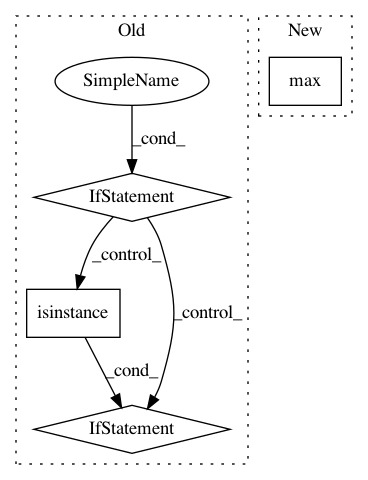

7c1233ba612bdb08d640c924ef4220b2fe13fb71,mne/io/reference.py,,add_reference_channels,#Any#Any#Any#,141
Before Change
Data with added EEG reference channels.
// Check to see that data is preloaded
if not inst.preload:
raise RuntimeError("Data needs to be preloaded.")
if isinstance(ref_channels, str):
ref_channels = [ref_channels]
elif not isinstance(ref_channels, list):
raise ValueError("`ref_channels` should be either str or list of str. "
"%s was provided." % type(ref_channels))
for ch in ref_channels:
After Change
if isinstance(inst, BaseRaw):
inst._cals = np.hstack((inst._cals, [1] * len(ref_channels)))
for pi, picks in enumerate(inst._read_picks):
inst._read_picks[pi] = np.concatenate([picks, [np.max(picks) + 1]])
inst.info._check_consistency()
set_eeg_reference(inst, ref_channels=ref_channels, copy=False)
return inst
In pattern: SUPERPATTERN
Frequency: 3
Non-data size: 4
Instances
Project Name: mne-tools/mne-python
Commit Name: 7c1233ba612bdb08d640c924ef4220b2fe13fb71
Time: 2020-09-25
Author: larson.eric.d@gmail.com
File Name: mne/io/reference.py
Class Name:
Method Name: add_reference_channels
Project Name: dPys/PyNets
Commit Name: 6d895c6a1f32c982ca3d75929bd0f303a16746d5
Time: 2018-08-28
Author: dpisner@utexas.edu
File Name: pynets/plotting.py
Class Name:
Method Name: plot_conn_mat
Project Name: SINGROUP/dscribe
Commit Name: 097217a383e91ea4d11448a55dff79c748cf641d
Time: 2017-08-08
Author: lauri.himanen@aalto.fi
File Name: describe/utils/stats.py
Class Name:
Method Name: system_stats